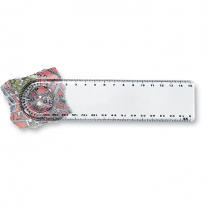
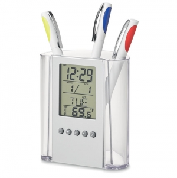

Tipos e variantes
Cadernos, blocos e agendas
Distinga folhas destacáveis, encadernação permanente e organização por datas; confirme o período de uma agenda datada.
Compare: Formato útil, pauta, folhas ou páginas, abertura e encadernação.
Contexto possível: Apontamentos, planeamento e formação.
Pastas e organizadores
Compare o conteúdo a guardar e o acesso; não deduza acessórios incluídos da apresentação.
Compare: Compartimentos, fecho e dimensões internas.
Contexto possível: Reuniões e organização de documentos.
Sistemas apagáveis
A Rocketbook documenta um sistema com páginas sintéticas, caneta específica e limpeza húmida; não generalize esse método a todos os cadernos apagáveis. ↗
Compare: Consumível compatível, apagamento e conservação dos registos.
Contexto possível: Notas temporárias com método de manutenção próprio.
Usos e contextos
- Teste o papel com o instrumento habitual e observe a leitura no verso.
- Num conjunto de reunião, confirme acessórios e encaixe da documentação.

O que comparar
- Confirme se a contagem é de folhas ou páginas e quais são utilizáveis.
- Teste abertura e passagem de página com os acessórios.
- Identifique canetas, recargas, folhas de reposição ou panos incluídos e a sua substituição.
Materiais e componentes
São possibilidades a identificar no artigo escolhido. Confirme a composição de cada parte; os materiais de uma variante não descrevem toda a família.
Folhas e capa de papel ou cartão
papel · cartão
A Holmen distingue gramagem, espessura e rigidez como propriedades e ensaios diferentes. ↗
Capa revestida
pele · imitação de pele
Identificar suporte, revestimento e acabamento.

Zonas de personalização
- Capa: Medir espaço livre de elástico, espiral, fechos e acessórios; identificar a camada exterior.
- Folhas ou separadores: Confirmar possibilidade e processo de impressão e montagem.
Técnicas e condições
Possibilidades gerais para comparar. A aplicação depende do artigo, da superfície, do desenho e das condições do processo; não está confirmada para um artigo específico.
Impressão digital UV
Avaliar acabamento, aderência e acesso à capa.
Termogravura
Confirmar material e resposta a calor e pressão numa amostra; aparência de pele não basta.
Serigrafia
Verificar tinta, revestimento, área plana e uso da capa.
Limitações e cuidados
- Não atribua compatibilidade de escrita ou apagamento sem instruções do sistema.
- O material das folhas não identifica o da capa; rigidez não demonstra resistência à água.
- Limpeza húmida só se aplica a sistemas que a documentem; siga as instruções do suporte e consumíveis. ↗
- Para notas permanentes, escolha suporte e conservação adequados à informação.
Antes de decidir
- O uso é temporário, permanente ou datado?
- Qual é o formato e a contagem de folhas?
- Que acessórios estão incluídos?
- Qual é o acabamento exterior?
Perguntas frequentes
Folhas e páginas são a mesma contagem?
Não. Uma folha tem duas faces; confirme se a contagem inclui faces em branco ou outros elementos.
Qualquer caneta serve num caderno apagável?
Não. Use o consumível indicado nas instruções do sistema.
Gramagem revela a espessura da capa?
Não. Mede massa por área; confirme também espessura, construção e rigidez. ↗
Fontes e âmbito
As referências sustentam os factos identificados no texto. Os tipos, contextos e critérios de escolha são orientação editorial; as instruções de um fabricante aplicam-se ao seu próprio âmbito.
-
Rocketbook Core — instruções de utilização
Rocketbook Help Center · Consulta:Sistema específico com páginas sintéticas, caneta própria e limpeza húmida; não aplicável a todos os cadernos apagáveis.
-
General Technical Information About Paperboard
Holmen Iggesund · Consulta:Diferenças entre gramagem, espessura e ensaios de rigidez do cartão.